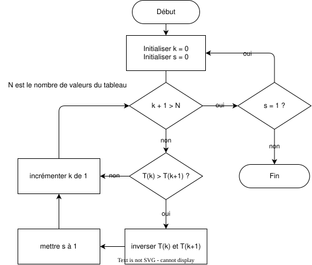
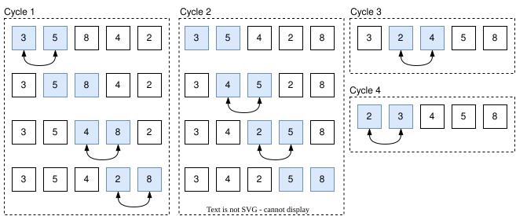
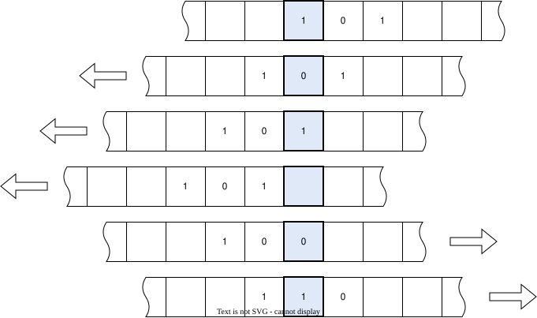
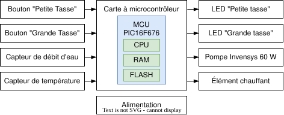
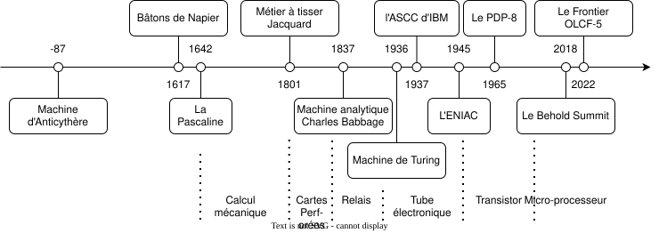

Programmation¤
La programmation, c'est l'art d'organiser la complexité.
Objectifs
- Définir les concepts d'algorithmique et de programmation.
- Exemples d'algorithmes.
- Origine de la programmation.
- Bref historique de l'informatique.
- Introduction à la machine de Turing.
La programmation, également appelée codage, est l'art subtil et rigoureux de transformer des concepts abstraits en instructions exécutables par une machine. À travers cette discipline, la programmeuse ou le programmeur devient l'architecte d'un univers logique, où chaque ligne de code ajoute une brique à une structure plus vaste, guidée par un plan précis : l'algorithme. Celui-ci, comparable à une partition musicale, précise la succession des opérations que la machine, fidèle exécutante, doit suivre sans faillir.
L'essence même de la programmation réside dans la traduction de ces algorithmes en un langage formel, terrain d'entente épuré et sans ambiguïté où l'esprit humain rencontre le processeur. Cette activité, à la croisée des chemins entre la science, l'ingénierie et l'art, est avant tout une quête de précision, d'efficacité et d'élégance.
Dans le cadre d'un enseignement académique, on parle souvent de cours d'Algorithmique et de Programmation, soulignant la dualité indissociable entre la conception d'une solution (l'algorithme) et sa mise en œuvre concrète (la programmation). Ces deux notions, bien que distinctes, s'entrelacent pour former le cœur battant de l'informatique, où l'abstraction des idées prend corps dans la rigueur du code. C'est à ce croisement que nous allons nous attarder pour éclaircir ces concepts et en dévoiler toute la richesse.

Algorithmique¤
L'algorithmique, et non l'algorithmie (terme fautif en français), est la science qui se consacre à l'élaboration des règles et techniques régissant la création et la conception des algorithmes. Ce domaine, que nous explorerons plus en détail dans le chapitre dédié aux algorithmes et à leur conception, dépasse largement le cadre de l'informatique. L'algorithmique ne se cantonne pas aux ordinateurs ; elle est omniprésente dans notre quotidien et se manifeste dans des contextes aussi variés que :
- l'art de concocter une recette de cuisine,
- la maîtrise du tissage des tapis persans,
- la résolution de casse-tête comme le Rubik's Cube,
- l'élaboration de tactiques sportives,
- ou encore dans les méandres des procédures administratives.
Ainsi, l'algorithmique constitue l'essence même de la pensée organisée. Elle transcende les frontières du numérique pour s'infiltrer dans les moindres recoins de la vie courante, là où la logique et la méthode s'imposent comme guides naturels de toute action efficace.
Algorithme d'Euclide¤
Dans le cadre mathématique et scientifique qui nous occupe, l'algorithme d'Euclide, datant probablement de 300 av. J.-C., constitue un exemple emblématique. Cet algorithme, d'une élégance intemporelle, permet de déterminer le plus grand commun diviseur (PGCD) de deux nombres. Sa logique, simple, mais puissante, se prête parfaitement à une représentation sous forme de diagramme de flux comme représenté sur cette figure :

Les informaticiens et ingénieurs apprécient particulièrement l'usage des diagrammes pour synthétiser et clarifier leurs idées complexes. Le diagramme de flux, en tant qu'outil de communication visuelle, permet de représenter un processus de manière structurée et accessible. Dans ce type de diagramme, les formes géométriques symbolisent des étapes du processus, tandis que les flèches en indiquent le déroulement. Par convention, les formes ovales marquent le début et la fin du processus, les rectangles désignent les opérations de traitement, et les losanges représentent les décisions à prendre. Une forme de décision pose une question et offre deux chemins possibles, chacun correspondant à une réponse spécifique. Comme nous le verrons plus tard, tout processus de traitement d'information comporte nécessairement une entrée et une sortie, illustrant ainsi la dynamique intrinsèque de l'algorithme.
Ainsi, l'algorithme d'Euclide, par sa simplicité de conception et sa pertinence universelle, demeure un exemple parfait de la manière dont les idées abstraites peuvent être traduites en instructions claires, tant pour l'esprit que pour la machine.
Si l'on désire déterminer le plus grand commun diviseur de 42 et 30, il suffit de suivre pas à pas l'algorithme d'Euclide, depuis le début jusqu'à la conclusion comme le montre le tableau ci-dessous :
| Étape | \(a\) | \(b\) | \(r\) |
|---|---|---|---|
| Prendre deux entiers naturels \(a\) et \(b\) | 42 | 30 | non défini |
| Est-ce que \(b\) est nul ? non ! | 42 | 30 | non défini |
| Calculer le reste de la division euclidienne de \(a\) par \(b\) | 42 | 30 | 12 |
| Remplacer \(a\) par \(b\) | 30 | 30 | 12 |
| Remplacer \(b\) par \(r\) | 30 | 12 | 12 |
| Est-ce que \(b\) est nul ? non ! | 30 | 12 | 12 |
| Calculer le reste de la division euclidienne de \(a\) par \(b\) | 30 | 12 | 6 |
| Remplacer \(a\) par \(b\) | 12 | 12 | 6 |
| Remplacer \(b\) par \(r\) | 12 | 6 | 6 |
| Est-ce que \(b\) est nul ? non ! | 12 | 6 | 6 |
| Calculer le reste de la division euclidienne de \(a\) par \(b\) | 12 | 6 | 0 |
| Remplacer \(a\) par \(b\) | 6 | 6 | 0 |
| Remplacer \(b\) par \(r\) | 6 | 0 | 0 |
| Est-ce que \(b\) est nul ? oui ! | 6 | 0 | 0 |
| Le PGCD de 42 et 30 est 6 | 6 | 0 | 0 |
Exercice 2 : Algorithme d'Euclide
Appliquer l'algorithme d'Euclide aux entrées \(a\) et \(b\) suivantes.
Que vaut \(a, b\) et \(r\) à la fin de l'algorithme, et quel est le plus grand diviseur commun ?
Tri à bulles¤
Un autre algorithme célèbre est celui du tri à bulles, procédé de tri simple qui compare des éléments adjacents et les échange si nécessaire afin de les organiser dans l'ordre souhaité.
Pour mieux l'illustrer, imaginez un jeu de 54 cartes mélangé que vous souhaitez trier par ordre croissant (As, 2, 3, ..., 10, Valet, Dame, Roi). Disposez les cartes en ligne et procédez par échanges successifs de deux cartes adjacentes mal placées, en répétant l'opération jusqu'à ce que l'ensemble du jeu soit correctement ordonné.
Voici un diagramme de flux représentant l'algorithme du tri à bulles :


Soit un tableau de \(N = 5\) valeurs à trier donné ci-dessous, le cycle se répète jusqu'à ce que le tableau soit complètement trié. Si \(s\) est égal à 0, il n'y a pas eu d'échange lors du parcours du tableau et le tableau est donc trié.
Les différentes étapes du tri à bulles sont illustrées ci-dessous :


Pour les cycles \(3\) et \(4\), nous ne montrons pas les étapes sans échange. Au cinquième cycle, aucun échange n'est nécessaire : l'algorithme se termine.
On peut compter le nombre de cycles assez facilement. Pour ce tableau de \(N = 5\) valeurs, il y a \(5\) cycles. Durant un cycle, il faut examiner \(N - 1\) paires d'éléments. Pour un tableau de \(N\) valeurs, cela représente donc \(N^2 - N\) comparaisons. Ce type d'algorithme est dit de complexité \(O(N^2)\) : le nombre d'opérations à effectuer est proportionnel au carré du nombre d'éléments à trier. Nous verrons plus tard que la complexité d'un algorithme est un critère essentiel et comment la calculer rigoureusement.
Conclusion¤
Les algorithmes se déclinent en une multitude de formes, des plus simples aux plus complexes, et trouvent leur utilité dans des domaines aussi variés que la cryptographie, la bio-informatique, la finance ou encore la robotique.
En tant que développeuse ou développeur, vous serez souvent amené·e à concevoir des algorithmes pour résoudre des problèmes variés. Avant de plonger tête baissée dans l'écriture du code, prenez un moment pour réfléchir posément. Sortez une feuille de papier, un crayon, et laissez vos neurones travailler. Comprendre profondément le problème est une étape cruciale, souvent négligée par les débutantes et débutants qui, pressés de passer à l'action, se jettent dans le code sans plan précis, « touillant » leur syntaxe à la vaudoise à la recherche d'une solution miraculeuse née du hasard. Prenez le temps de mûrir votre réflexion, imaginez des exemples concrets, testez vos hypothèses, et vous découvrirez que la programmation, loin d'être un combat, peut devenir un jeu d'enfant empreint de logique et de clarté.
Programmation¤
Parlons couture ! La machine Jacquard est un métier à tisser mis au point par Joseph Marie Jacquard en 1801. Il constitue le premier système mécanique programmable avec cartes perforées.

Les cartes perforées, ici des rouleaux de papier, contiennent donc la suite des actions guidant les crochets permettant de tisser des motifs complexes. Elles font office de programme pour la machine, et leur format (largeur, dimensions des trous, etc.) reste spécifique à chaque modèle. En termes informatiques, on dirait que les cartes perforées sont écrites en langage machine.
La révolte des canuts
L'avènement de la machine Jacquard a révolutionné l'industrie textile mais a aussi eu des conséquences sociales. L'automatisation d'un travail qui jadis était effectué manuellement causa une vague de chômage menant à la Révolte des canuts en 1831.
La programmation définit toute activité menant à l'écriture de programmes. En informatique, un programme est défini comme un ensemble ordonné d'instructions codées avec un langage donné et décrivant les étapes menant à la résolution d'un problème. Comme nous l'avons vu, il s'agit le plus souvent d'une écriture formelle d'un algorithme par l'intermédiaire d'un langage de programmation.
Les informaticiens-tisserands responsables de la création des cartes perforées auraient pu se demander comment simplifier leur travail en concevant un langage formel pour décrire des motifs complexes dont les composants de base se répètent d'un ouvrage à l'autre. Prenons par exemple un ouvrier spécialisé en héraldique et chargé de créer des motifs de blasons élaborés.

Nul n'ignore que l'héraldique possède son langage parfois obscur, et celle ou celui qui le maîtrise souhaiterait l'utiliser plutôt que de percer manuellement les cartes pour chaque point de couture. Ainsi, l'anachronique informaticien-tisserand désireux de tisser le motif des armoiries du duc de Mayenne aurait sans doute rédigé un programme informatique dans sa langue. Ce programme aurait pu ressembler à ceci :
Écartelé, en 1 et 4 :
coupé et parti en 3,
au premier fascé de gueules et d'argent,
au deuxième d'azur semé de lys d'or
et au lambel de gueules,
au troisième d'argent à la croix potencée d'or,
cantonnée de quatre croisettes du même,
au quatrième d'or aux quatre pals de gueules,
au cinquième d'azur semé de lys d'or
et à la bordure de gueules,
au sixième d'azur au lion contourné d'or,
armé,
lampassé et couronné de gueules,
au septième d'or au lion de sable,
armé,
lampassé de gueules,
au huitième d'azur semé de croisettes d'or
et aux deux bar d'or.
Sur le tout d'or à la bande de gueules
chargé de trois alérions d'argent
Le tout brisé d'un lambel de gueules ;
En 2 et 3 contre-écartelé :
en 1 et 4 d'azur,
à l'aigle d'argent, becquée,
languée et couronnée d'or et en 2 et 3 d'azur,
à trois fleurs de lys d'or,
à la bordure endentée de gueules et d'or.
Tout l'art est de pouvoir traduire ce texte compréhensible par tout héraldiste en un programme en langage machine compréhensible par un métier à tisser. Cette traduction est le rôle du compilateur que nous verrons plus tard. Quant au texte, et bien qu'il nous vient tout droit du moyen-âge, il partage avec les langages de programmation modernes des caractéristiques communes :
- Lexique
-
le texte est composé de mots et de symboles qui ont un sens précis, les couleurs (émaux) ont des termes spécifiques (gueules pour le rouge, azur pour le bleu, sable pour le noir, etc.), les figures (meubles) aussi (lys, croix, lion, aigle, etc.).
- Syntaxe
-
le texte suit une structure grammaticale précise, le fond (champ) est toujours mentionné en premier, les figures en second suivi de leurs attributs.
- Sémantique
-
les termes peuvent adopter une certaine morphologie , par exemple le lion peut être lampassé (langue de couleur différente), couronné (avec une couronne), armé (avec des griffes et des dents de couleur différente). Cette sémantique implique l'adjonction de préfixes ou de suffixes.
- Grammaire
-
le texte est organisé en phrases, les phrases sont organisées en paragraphes, les paragraphes en sections, les symboles vont être interprétés en fonction de leur position dans le texte, de leur contexte.
De gueules
Notons que gueules signifie rouge. Le drapeau suisse est donc de gueules, à la croix alésée d'argent.
Langage de programmation¤
Traduire un algorithme en une suite d'ordres compréhensibles par une machine est donc le travail du programmeur. Il existe de nombreux langages de programmation, mais la plupart se regroupent en deux catégories :
- Les langages textuels qui utilisent du texte pour décrire les instructions.
- Les langages visuels qui utilisent des éléments graphiques pour décrire les instructions.
L'être humain a appris depuis des millénaires à communiquer avec des symboles, il stocke son savoir dans des livres ou à une certaine époque, sur des tablettes de cire. Au début de l'ère de l'informatique, l'ordinateur ne pouvait communiquer que par du texte. Les premiers langages de programmation étaient donc textuels. Avec l'avènement des interfaces graphiques, les langages visuels ont vu le jour, mais ils sont davantage réservés pour enseigner la programmation aux enfants ou pour faciliter la programmation de robots ou de jeux vidéos.
Scratch
Scratch est un langage de programmation visuel développé par le MIT. Il est utilisé pour enseigner les bases de la programmation aux enfants. Il permet de créer des animations, des jeux et des histoires interactives.

LabView
LabView est un langage de programmation visuel développé par National Instruments. Il est utilisé pour la programmation de systèmes de mesure et de contrôle. Il est très utilisé dans l'industrie et la recherche.

Son interface est composée de blocs graphiques que l'on relie entre eux pour créer un programme.
Common Lisp
Common Lisp est un langage de programmation inventé en 1984. C'est un langage de programmation textuel de type fonctionnel. Voici un exemple de programme en Common Lisp pour résoudre le problème des tours de Hanoï :
Pour ce cours, et pour l'enseignement de la programmation en général, nous utiliserons des langages textuels.
Calculateur¤
Un calculateur du latin calculare : calculer avec des cailloux, originellement appelés abaque, était un dispositif permettant de faciliter les calculs mathématiques.
Les os d'Ishango datés de 20'000 ans sont des artéfacts archéologiques attestant la pratique de l'arithmétique dans l'histoire de l'humanité.

Si les anglophones ont détourné le verbe compute (calculer) en un nom computer, un ordinateur est généralement plus qu'un simple calculateur, car même une calculatrice de poche doit gérer en plus des calculs un certain nombre de périphériques comme :
- l'interface de saisie (pavé numérique) ;
- l'affichage du résultat (écran à cristaux liquides).
Notons qu'à l'instar de notre diagramme de flux, un calculateur dispose aussi d'une entrée, d'une sortie et d'états internes.
Ordinateur¤
Le terme ordinateur est très récent, il daterait de 1955, créé par Jacques Perret à la demande d'IBM France (c.f. 2014 : 100 ans d'IBM en France). Voici la lettre de Jacques Perret à IBM France :
« Le 16 IV 1955, Cher Monsieur,
Que diriez-vous d’ordinateur ? C’est un mot correctement formé, qui se trouve même dans le Littré comme adjectif désignant Dieu qui met de l’ordre dans le monde. Un mot de ce genre a l’avantage de donner aisément un verbe ordiner, un nom d’action ordination. L’inconvénient est que ordination désigne une cérémonie religieuse ; mais les deux champs de signification (religion et comptabilité) sont si éloignés et la cérémonie d’ordination connue, je crois, de si peu de personnes que l’inconvénient est peut-être mineur. D’ailleurs votre machine serait ordinateur (et non-ordination) et ce mot est tout à fait sorti de l’usage théologique. Systémateur serait un néologisme, mais qui ne me paraît pas offensant ; il permet systématisé ; — mais système ne me semble guère utilisable — Combinateur a l’inconvénient du sens péjoratif de combine ; combiner est usuel donc peu capable de devenir technique ; combination ne me paraît guère viable à cause de la proximité de combinaison. Mais les Allemands ont bien leurs combinats (sorte de trusts, je crois), si bien que le mot aurait peut-être des possibilités autres que celles qu’évoque combine.
Congesteur, digesteur évoquent trop congestion et digestion. Synthétiseur ne me paraît pas un mot assez neuf pour désigner un objet spécifique, déterminé comme votre machine.
En relisant les brochures que vous m’avez données, je vois que plusieurs de vos appareils sont désignés par des noms d’agent féminins (trieuse, tabulatrice). Ordinatrice serait parfaitement possible et aurait même l’avantage de séparer plus encore votre machine du vocabulaire de la théologie. Il y a possibilité aussi d’ajouter à un nom d’agent un complément : ordinatrice d’éléments complexes ou un élément de composition, par exemple : sélecto-systémateur. Sélecto-ordinateur a l’inconvénient de deux o en hiatus, comme électro-ordonnatrice.
Il me semble que je pencherais pour ordonnatrice électronique. Je souhaite que ces suggestions stimulent, orientent vos propres facultés d’invention. N’hésitez pas à me donner un coup de téléphone si vous avez une idée qui vous paraisse requérir l’avis d’un philologue.
Vôtre, Jacques Perret »
La machine de Turing¤
Il est impossible d'introduire les notions d'ordinateur, de programmes et d'algorithmes sans évoquer la figure emblématique d'Alan Turing. Ce mathématicien britannique, véritable pionnier de l'informatique, a joué un rôle crucial dans l'histoire, notamment en déchiffrant le code de la machine Enigma utilisée par les forces allemandes pendant la Seconde Guerre mondiale.
La machine de Turing est un modèle théorique fondamental qui représente la conception d'un ordinateur. Imaginée comme une bande infinie divisée en cases, elle est dotée d'une tête de lecture/écriture et d'un ensemble fini d'états. Cette machine peut lire et écrire des symboles sur la bande, se déplacer à gauche ou à droite, et changer d'état en fonction des instructions reçues. Capable de simuler n'importe quel algorithme, la machine de Turing est un modèle abstrait qui a permis de définir la notion de calculabilité et de poser les bases de l'informatique théorique.
Lorsqu'on parle d'un ordinateur Turing-complet, on fait référence à un dispositif capable de simuler n'importe quel algorithme, condition sine qua non pour les ordinateurs modernes. Ces machines se composent d'un programme et d'une mémoire : le programme, une suite d'instructions précises, est exécuté par le processeur, tandis que la mémoire sert d'espace de stockage pour les données et les instructions.
Prenons l'exemple d'un programme visant à ajouter 1 à un nombre n en binaire. L'algorithme correspondant pourrait être décrit ainsi :

On commence par l'état de gauche, on lit un symbole sur la bande. Tant que ce symbole est 0 ou 1 on avance à droite. Lorsque l'on rencontre une case vide, on se déplace à gauche et on entre dans le second état. Tant qu’on lit un 1, on le remplace par un 0 et on avance à gauche. Lorsqu’on lit un 0 ou une case vide, on le remplace par un 1 et on se déplace à gauche. On revient à l'état initial et on continue jusqu'à ce que l'on rencontre une case vide.
Sur la figure ci-dessous, on peut voir l'exécution de l'algorithme sur une bande après chaque étape. La case centrale est celle sous la tête de lecture/écriture. On voit bien qu'au début on a le nombre 101 (5) et à la fin on obtient le nombre 110 (6). L'algorithme a bien fonctionné.


On peut essayer de traduire cet algorithme dans un langage formel :
#include <stdio.h>
#include <string.h>
#define BAND_SIZE 1000
int main() {
char tape[BAND_SIZE] = {0};
int head = BAND_SIZE / 2; // Position au milieu de la bande
scanf("%s", tape + head); // Saisie du nombre d'entrée
// Algorithme d'addition
char c = tape[head];
while (c == '0' || c == '1')
c = tape[++head];
c = tape[--head];
while (c == '1') {
tape[head--] = '0';
c = tape[head];
}
tape[head] = '1';
// Recherche de la position du premier symbole non nul
while (tape[head]) head--;
head++;
printf("%s\n", tape + head);
}
L'ordinateur d'antan¤

Le téléscripteur Siemens T100 est un exemple d'ordinateur des années 1960. Il était utilisé pour la transmission de messages télégraphiques. Il était composé d'un clavier et d'une imprimante. Il était capable de lire et d'écrire des messages sur une bande de papier. Il était programmé en utilisant des cartes perforées.
On les appelait aussi télétype ou abrégé TTY. Ce terme est resté aujourd'hui pour désigner une console de terminal.
L'ordinateur moderne¤
Les ordinateurs modernes sont des machines complexes qui contiennent plusieurs composants. Les composants principaux d'un ordinateur sont :
- Le processeur (CPU)
-
c'est le cerveau de l'ordinateur. Il exécute les ordres du programme.
- La mémoire (RAM)
-
c'est l'espace de stockage temporaire des données et des instructions du programme.
- Le disque dur (HDD/SSD)
-
c'est l'espace de stockage permanent des données.
- Les périphériques d'entrée/sortie
-
ce sont les interfaces qui permettent à l'ordinateur de communiquer avec l'utilisateur (clavier, souris, écran, imprimante, etc.).
Contrairement à la machine de Turing, les ordinateurs sont équipés d'une mémoire à accès aléatoire qui permet d'accéder n'importe quel élément de la mémoire sans avoir à parcourir toute la bande. Également, ces ordinateurs disposent d'un processeur capable de calculer des opérations arithmétiques et logiques en un temps très court. Ces processeurs peuvent même calculer des fonctions trigonométriques, exponentielles et logarithmiques facilement. En reprenant notre programme d'addition binaire, il est beaucoup plus facile de l'écrire en C :
Néanmoins, il est important de comprendre que ce programme est traduit en langage machine par un programme appelé compilateur. Une étape intermédiaire est la traduction du programme en langage assembleur. Le langage assembleur est un langage de plus bas niveau qui permet de contrôler directement le processeur. Ce sont les instructions primitives du processeur. Le programme ci-dessus sera converti en assembleur X86 comme suit :
.LC0:
.string "%d"
main:
sub rsp, 24
mov edi, OFFSET FLAT:.LC0
xor eax, eax
lea rsi, [rsp+12]
call scanf
mov eax, DWORD PTR [rsp+12]
mov edi, OFFSET FLAT:.LC0
lea esi, [rax+1]
xor eax, eax
call printf
xor eax, eax
add rsp, 24
ret
Ce programme assembleur peut ensuite être converti en langage machine binaire qui est le langage compris par le processeur.
48 83 ec 18
bf 00 00 00 00
31 c0
48 8d 74 24 0c
e8 00 00 00 00
8b 44 24 0c
bf 00 00 00 00
48 8d 70 01
31 c0
e8 00 00 00 00
31 c0
48 83 c4 18
c3
In fine, ce programme sera écrit en mémoire avec des 1 et des 0 :
01001000100000111110110000011000101111110000000000000000000000000000000000110001
11000000010010001000110101110100001001000000110011101000000000000000000000000000
00000000100010110100010000100100000011001011111100000000000000000000000000000000
01001000100011010111000000000001001100011100000011101000000000000000000000000000
0000000000110001110000000100100010000011110001000001100011000011
Les systèmes à microcontrôleurs¤
Les microcontrôleurs sont des ordinateurs complets intégrés dans un seul circuit intégré. Ils sont omniprésents dans notre vie quotidienne. Que ce soit la télévision, le téléphone portable, les machines à café, les voitures, les jouets, les montres ou les appareils électroménagers, ils contiennent tous un ou plusieurs microcontrôleurs.
Ces derniers sont aussi programmés en implémentant des algorithmes. Le plus souvent ces algorithmes sont écrits en langage C car c'est un langage de programmation très proche du langage machine. Les microcontrôleurs sont souvent utilisés pour contrôler des systèmes en temps réel. Ils sont capables de lire des capteurs, de contrôler des actionneurs et de communiquer avec d'autres systèmes.

Prenons l'exemple de cette machine à café. C'est une machine qui coûte environ 100 CHF. Elle est équipée d'un microcontrôleur à 30 centimes qui contrôle le chauffage, la pompe à eau et les leds. Le microcontrôleur est programmé pour lire les boutons de commande, contrôler les actionneurs et afficher des messages à l'utilisateur.


Derrière se cache un programme, bien complexe. Si vous avez une de ces machines mettez là en service, vous verrez que s'il manque de l'eau vous aurez un message d'erreur. Au démarrage, les LEDs clignotent le temps que la machine chauffe. Une fois en température, vous pouvez l'utiliser. Ce sont des algorithmes qui sont derrière tout cela.
Historique¤


Pour mieux se situer dans l'histoire de l'informatique, voici quelques dates clés :
- 87 av. J.-C.
-
La machine d'Anticythère considéré comme le premier calculateur analogique pour positions astronomiques permettant de prédire des éclipses. Cette machine encore si mystérieuse a inspiré de nombreux scénarios comme le film Indiana Jones et le Cadran de la destinée. Elle a été découverte en 1901 dans une épave au large de l'île d'Anticythère. Grâce aux techniques modernes de radiographie, on a pu reconstruire une partie de son mécanisme.
- 1642
-
La Pascaline : machine d'arithmétique de Blaise Pascal, première machine à calculer. Elle permettait d'effectuer des additions et des soustractions en utilisant des roues dentées.
- 1801
-
Métier à tisser Jacquard programmable avec des cartes perforées.
- 1837
-
Machine à calculer programmable de Charles Babbage. Charles Babbage est considéré comme le père de l'informatique. Il a conçu la machine analytique qui est considérée comme le premier ordinateur programmable. Ada Lovelace, fille de Lord Byron, est considérée comme la première programmeuse de l'histoire.
- 1936
-
La machine de Turing est un modèle théorique d'un ordinateur capable de simuler n'importe quel algorithme. Elle a été inventée par Alan Turing.
- 1937
-
l'ASCC (Automatic Sequence Controlled Calculator Mark I) d'IBM, le premier grand calculateur numérique. Il était constitué de 765'000 pièces, dont des interrupteurs, des relais, des arbres mécaniques et des embrayages. Les ordres étaient lus à partir d'une bande perforée. Une seconde bande perforée contenait les données d'entrée. Les instructions étant simples, pour répéter un algorithme en boucle comme l'algorithme d'Euclide, on pouvait typiquement créer une boucle dans la bande perforée.
- 4500 kg
- 6 secondes par multiplication à 23 chiffres décimaux
- Cartes perforées
- 1945
-
L'ENIAC, de Presper Eckert et John William Mauchly. C'est le premier ordinateur Turing-complet entièrement électronique et fonctionnant avec des diodes et des tubes à vide. Il était programmé en branchant des câbles et en changeant des interrupteurs. Il était utilisé pour des calculs balistiques.
- 160 kW
- 100 kHz
- Tubes à vide
- 100'000 additions/seconde
- 357 multiplications/seconde
- 1965
-
Premier ordinateur à circuits intégrés, le PDP-8
- 12 bits
- mémoire de 4096 mots
- Temps de cycle de 1.5 µs
- Fortran et BASIC
- 2018
-
Le Behold Summit est un superordinateur construit par IBM.
- 200'000'000'000'000'000 multiplications par seconde
- simple ou double précision
- 14.668 GFlops/watt
- 600 GiB de mémoire RAM
- 2022
-
Le Frontier ou OLCF-5 est le premier ordinateur exaflopique du monde.
- 1,714,810,000,000,000,000 multiplications par seconde (1.1 exaflops)
- 9472 processeurs Trento à 64 cœurs de 2 GHz (606 208 cœurs)
- 37888 processeurs graphiques MI250x (8 335 360 cœurs)
- 22.7 MW (5 locomotives électriques ou 56'750 foyers européens)
- 62.68 GFlops/watt
Conclusion¤
Les algorithmes existent depuis fort longtemps et sont utilisés dans de nombreux domaines. Ils sont la base de la programmation et de l'informatique.
Les hommes ont cherché à pouvoir automatiser leurs tâches, d'abord avec des machines mécaniques comme le métier à tisser Jacquard. Puis, après l'invention de la microélectronique, il a été possible de complexifier ces machines pour en faire des ordinateurs.
Pour les contrôler, les informaticiens écrivent des programmes qui implémentent des algorithmes. Ces programmes sont ensuite traduits en langage machine par un compilateur.
Aujourd'hui, les superordinateurs sont capables de réaliser des milliards de milliards d'opérations par seconde, mais ils sont toujours programmés de la même manière : avec du texte.
Exercices de révision¤
Exercice 3 : Ordinateur
Quelle est l'étymologie du mot ordinateur ?
- calculateur
- ordonnateur
- systémateur
- ordiner
Exercice 4 : Machine de Turing
Qu'est-ce que la machine de Turing ?
- Une bombe réalisée pour casser le code de la machine Enigma.
- Un modèle théorique d'un ordinateur capable de simuler n'importe quel algorithme.
- Le premier ordinateur électronique.
- Un modèle théorique d'un ordinateur ne pouvant pas simuler n'importe quel algorithme.
Exercice 5 : Machine à café
Complétez la description d'une machine à café en nommant les quatre éléments manquants :
- Quel composant est l'organe de contrôle de la machine ?
- Comment nomme-t-on, pour ce composant, les boutons de commande et les capteurs ?
- Et les LEDs et les actionneurs ?
- Qu'est-ce qui stocke les paramètres de configuration de la machine ainsi que son programme ?
Solution
Une machine à café est équipée d'un microcontrôleur, qui est l'organe de contrôle de la machine. Ce dernier comporte des entrées comme les boutons de commande ou les capteurs ainsi que des sorties comme les LEDs et les actionneurs. Une mémoire permet de stocker les paramètres de configuration de la machine ainsi que son programme.